transcription of Steel, Rust, and truth | Steve Klabnik | Bug Bash 2026
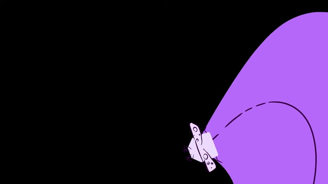
Hi, I'm Steve, everybody. How's it going?
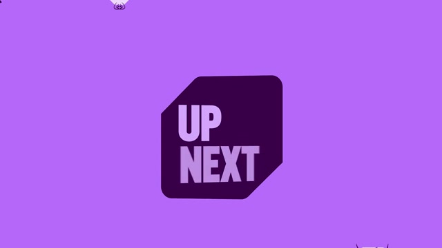
This has been a great conference.
I've seen over half a dozen people I haven't talked to in like 10 years here during this time, so it's been great, and it's been nice to meet a lot of you as well.
I do work at East River Source Control at the moment, how to say this delicately.
If you're experiencing unreliability with your source control hosting, we would like talk to you.
We've not launched a product yet, but we're working on it furiously and quickly, as you might imagine.
But I'm not going to talk about any of that for this talk.
I love a cold open and I feel bad about a cold open, so just like, bear with me a little bit, please.
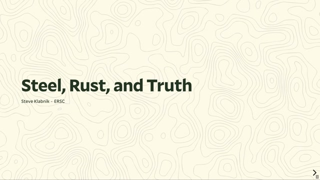
Okay?
That's my warning about my own talk.
So the first thing I'm going to talk today about is Pittsburgh.
I think that we are all situated in time and place and history, and I spent the first 26 years of my life in Pittsburgh,
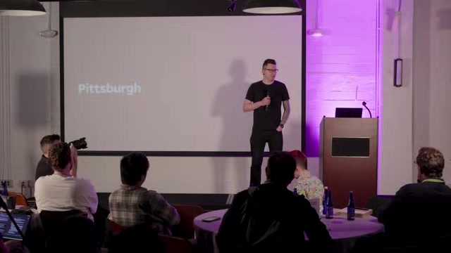
and I think Pittsburgh is really important and has a lot to teach everybody.
So I'm going to tell you.
a little bit about Pittsburgh.
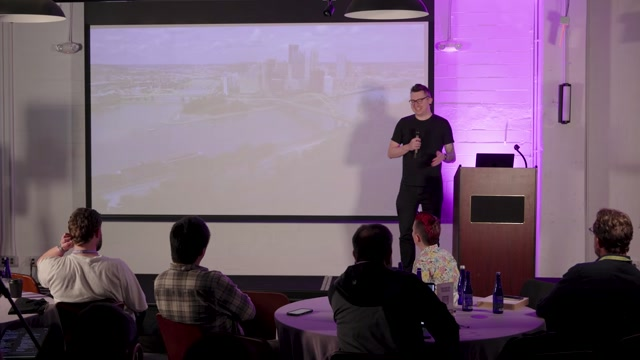
This is a recent photo.
I think this is from Wikimedia.
If you go on like Wikipedia, you'll see this picture of Pittsburgh.
Pittsburgh is a great town.
It started off at literally this is the point of the three rivers.
If you ever heard about that as being a thing.
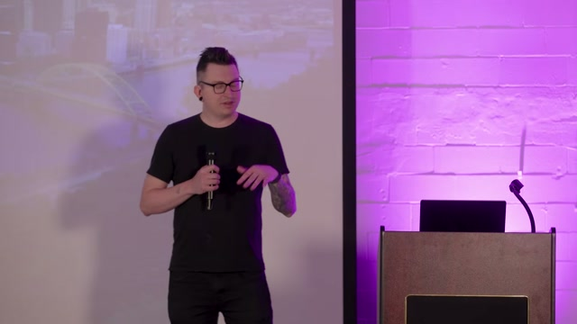
Down in the middle of this point was a thing called Fort Pitt.
And you can actually kind of see, this is a little washed out,
but there's like the outline of the fort that was originally there,
is down at the center.
And like, that's how, you know, obviously there's a large history in the Americas before
the
folks from Europe showed up, but we're going to start to the part where the folks from Europe showed up.
A bunch of like, you know, people from France and England ended up settling at the bottom of
Pittsburgh here, and it became like a really important part of what was like the Western frontier
of the U.S. at the time.
And after the like literally, it was only a fort when it became a city, there's all sorts of stuff
going on.
During George Washington's presidency, there was actually an event called the Whiskey Rebellions.
So basically like the U.S. government, which again was like, the U.S. government, which again was like
brand new and it just started was sort of trying to exert centralized force over the
decentralized colonies. And so, like, they decided to tax whiskey. There's a whole bunch of
reasons that I'm not going to get down that tangent for this talk, but like that ended up
becoming this whole giant thing. George Washington, like literally personally led troops to march
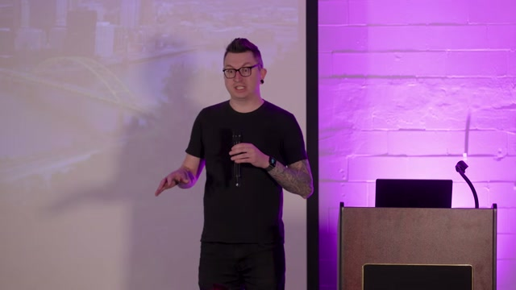
into Pittsburgh and be like, hey, what's up? You actually want to fight about this? Because, like, I got guns.
And then, like, agrarian stuff kept happening. But eventually iron became a really big deal.
Pittsburgh has a lot of natural.
resources with like coal and stuff like this. And so iron became a super big deal.
Like people know Pittsburgh is the steel city, and we'll get to that in just a moment, but like iron happened before steel. And to the degree where like there was, it was described as like hell with the lid knocked off was what people felt about Pittsburgh itself.
Heavy industry, not exactly the most pleasant thing to exist. But like that happened in Pittsburgh before even its current, not even its current identity, but what people sort of like think about. And in fact,
It's really interesting how you can trace history even through images of today.
So this is a little small, but at the top of this building over here, it says UPMC at the top,
because while that was the US steel tower, what it was originally built, and in fact, it's built of that kind of steel that russes in that orange kind of color,
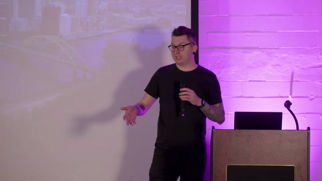
it represented the steel industry, and now it's the University of Pittsburgh Medical Center.
Shout out to you all the people that watch the pit, which is, you know, raised up Pittsburgh a little bit recently.
But we're going to get that a second.
But the point is like, you could even see the transformation of Pittsburgh as a city in just this image.
alone, if only you know where to look.
My cousin got married last week, and so I was actually literally in Pittsburgh, and to give
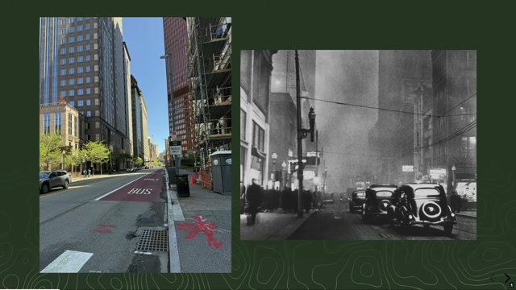
you sort of an idea of how much Pittsburgh has transformed, even from the steel industry times
into sort of modern times, because like the steel industry collapsed, we're going to get there.
But like, I took this photo last week, and then this is a photo on the same street, not the same
block, but like the same street, about 100 years ago.
So like, you know, you couldn't breathe, like very literally.
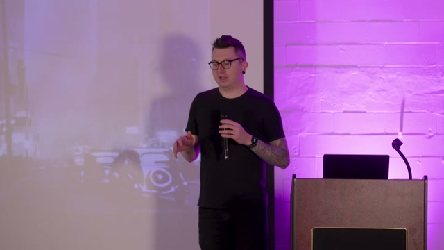
A lot of the history of like white collar.
versus blue collar labor comes from the fact that if you needed to work a real job outside,
you needed to be protected from the so you wore color like blue, which would hide it.
And if you had the equivalent of an email job back in the 1800s, you were wearing white
because you were inside and you were isolated from this kind of shenanigans.
And so, like, you can just also, like, physically see the difference.
And so this is like part of the story of Pittsburgh is one of total transformation several different
times throughout its history, from like an agrarian thing to early industry and then to steel.
and then now.
eventually, you know, once steel collapsed, we had to figure out what the F to do about that.
And so Pittsburgh is now, like, there's a reason why the show that is like the pit is about the medical
industry, and that's because Pittsburgh is sort of shifted into education and medicine and
like that kind of stuff.
And so the economy is like totally changed.
And that change happened like both across hundreds of years and also just within my lifetime.
So next I want to tell you about my maternal grandfather, Ken Hooth.
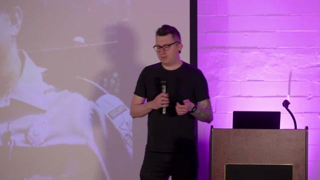
So, you know, he did a lot of things in his life.
He died a couple years ago, but the sort of important part about this story is this is a picture of him as a security guard at a steel mill.
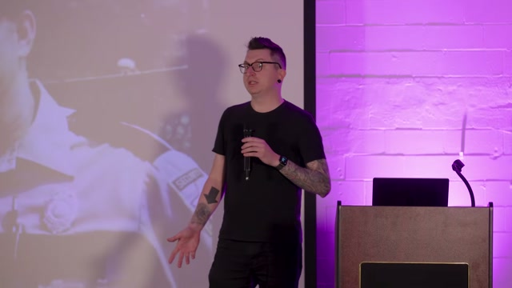
Like he worked at a steel mill his entire life, he got a pension, he eventually retired.
Did he have a particular passion for steel?
No, but he did have a passion for like taking care of his family.
And so, you know, he did a job that he had to do in order to make money to make sure that my mom, you know, had a good childhood and all that kind of stuff.
And so, um,
I think about him often and also especially like lately as all these things are happening because, you know, like he got, he basically was at the tail end of a dying industry,
but also managed to retire before that, like completely collapsed.
Like he kind of like got, you know, got out right at the end.
And so a very funny minor tangent.
I was working Cloudflare a couple years ago, and there was a weird outage where Verizon had posted a BGP route and redirected all of the traffic to like one Verizon thing.
That was like the steel mill my grand.
worked at. So it was a very weird like past and present kind of like thing. And then I was like,
wait, why do they, why are they like getting BGP traffic? Anyway, whatever. But the point is,
is that like, you know, this is a real thing that happens to people and industries and sometimes it
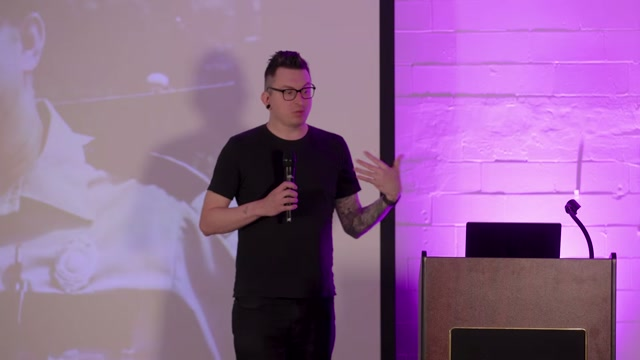
works out for you. This is a picture of my dad. My dad died about 14 years ago, like five weeks from now.
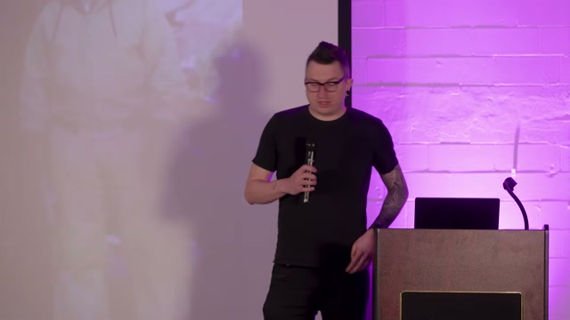
And he, and like, so that was my maternal grandfather, I should do earlier, his dad, and his dad before that,
his dad before that.
we're all butchers and farmers. Like, we raised cattle, and that was, like, what he loved to do.
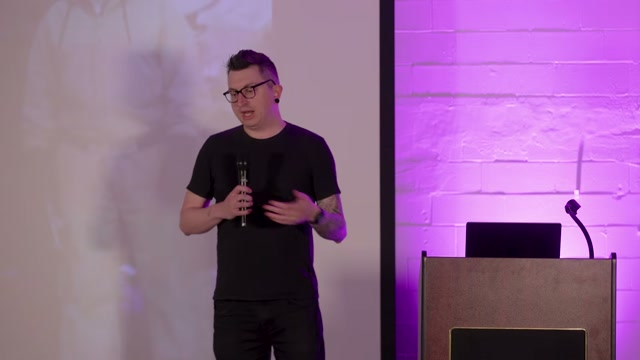
And that's why I show you this photo of him in front of his beloved farmall tractor. He's very big,
like, red, not green tractors thing. But, like, you know, he, by the time, like, I was born in 1986,
and when he was trying to raise his family, it turns out that, like, he, the thing that he loved to do
didn't work out in that particular historical moment. Factory farming and the consolidation of farming meant that you could not really survive.
as a local factory farmer with your 15, 20 cattle on 20 acres of land.
And so my dad had to work a tool and die job where, ironically, he inspected, like, machines for safety properties.
I didn't really realize that, so I was literally putting this talk together. I was like, whoa.
But, like, what he loved to do is farming. And so he would wake up early before going to work and then do his farming stuff.
And then after he would come home from work, he would do more farming stuff because that's what he loved.
But it was just, like, not economically viable for his farming.
him to be able to do the thing that he cared about. And I was like seven when I found computers.
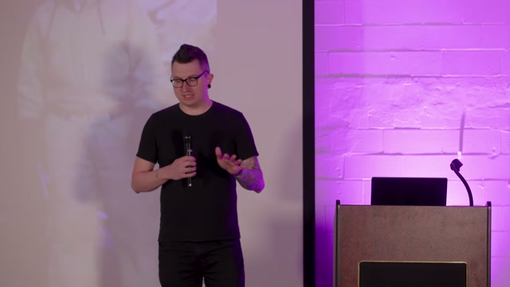
We're getting to me in a second on the next slide. But like the point is, is that like sometimes that
happens too. And that's a thing that also like occurred. And like I think a lot about the fact that
if he hadn't, you know, died then, maybe if he was a little bit older, like just 20 years later,
everyone starts to care about like, you know, organic this and farm to table that. And like his 20
cattle could have maybe actually fed a family if that happened in 2010 instead of the 1900s, as the kids say.
So, you know, I think about my dad a lot as well. So they have me. This is also an advanced
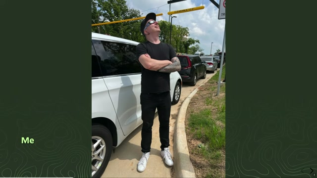
Rust meme for any of you who are around during the 2016 thing or whatever. But like, I'm wearing a
different brand of white shoes and the black baseball cap I have upstairs in my hotel room is a different
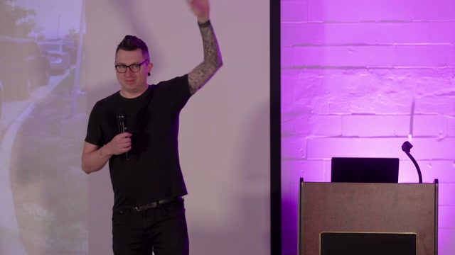
black baseball cap, you know, but whatever. I've been me for a long time. I, again, history situated in time and
place, I realized also while I was here that the 930 club was like a couple blocks away from here.
Like, all.
All of the music that I loved and grew up with was happening as I was born, like feet, like 10-minute walk away from here.
I was like Ian McKay just did everything I care about, which is why I dress like this now.
I was recently in a party with a bunch of other late 30s, early 40s guys, and we realized that four of us were wearing black t-shirts, black jeans, and white shoes.
It was just like, when did that become the uniform? I don't know.
Anyway, the point is, is that, like, I sort of, you know, I was a little kid, and I saw my dad not be able to do what he loved as a job.
job and I realized I was not going to be carrying on the family legacy as a farmer. Like,
I have sort of broken the family tradition by becoming a software developer. And, you know,
I got happening to get lucky enough that I was introduced to computers at like seven, and then I went like,
oh, yeah, like, I want to do this. I'm like not going outside anymore. And that's kind of what happened.
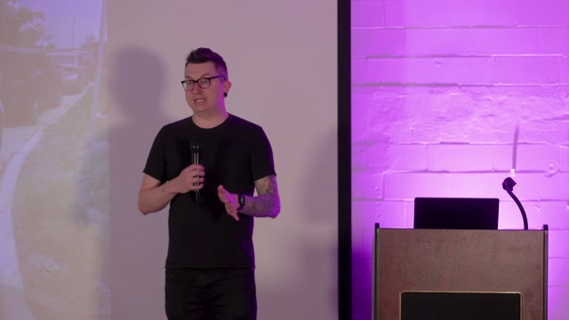
A colossal cave adventure, don't let your children play it, or they'll become nerds. But like,
the point is, is that I managed to find this thing that I truly loved and purely by
the accident of history and time and place, like, I am now flying all over the world and getting
to talk to all of you, and like, I can afford a mortgage and, like, you know, like, all of these
things, like, I got lucky that the thing that I love to do happened to be economically important
at the time and place where I was born. And that's not a luxury that my father had, and it's not
really a luxury my grandfather had either. And so that's just like a thing that I've sort of been
thinking a lot lately because 2026 is like a weird year for software.
And so, yeah, like three different generations.
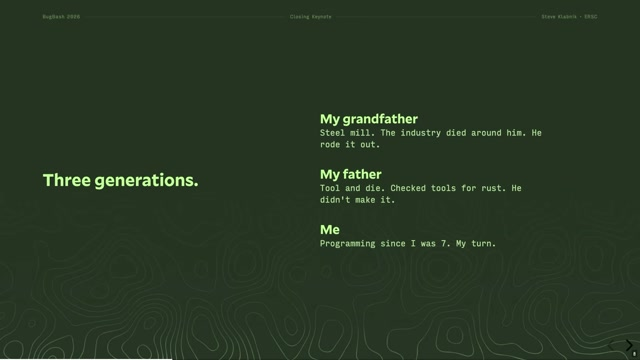
Like my grandfather, that industry collapsed, but it did not actually affect him at all.
My dad did tool and die work, literally checked tools for Rust, and like, he didn't really
get to do what he wanted to do.
And then, you know, now I'm me.
So the question that I've been thinking about a lot this past year is like, which one of those
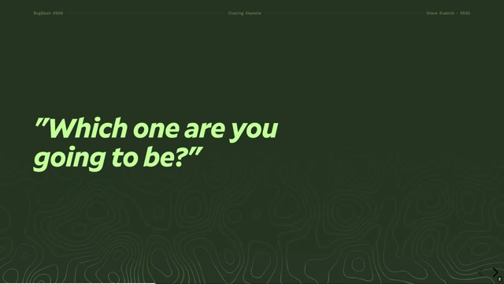
things am I going to be?
You know, obviously I'm going to be me, but like, am I going to be Pittsburgh?
Am I going to be my grandfather or I'm going to be my father?
Like I'm not sure yet exactly.
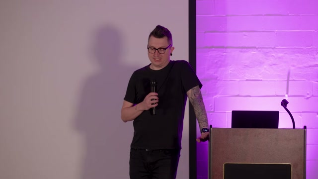
But I'm getting way ahead of myself.
So why is it a weird year for software in, you know, AD 2026 or whatever?
Well, it's AI. Sorry to put AI as getting to you ever, literally ever talk about this.
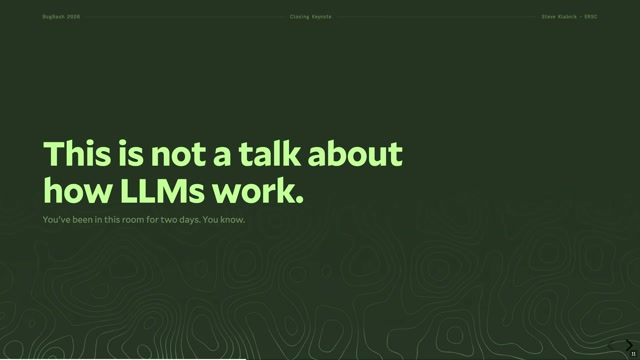
I'm not going to talk about how LMs work mostly.
There's a little asterisk in this or whatever, but like you're all here.
You know AI is happening. I don't need to tell you that it's everything all the time and that's all people can talk about and everyone's super feeling.
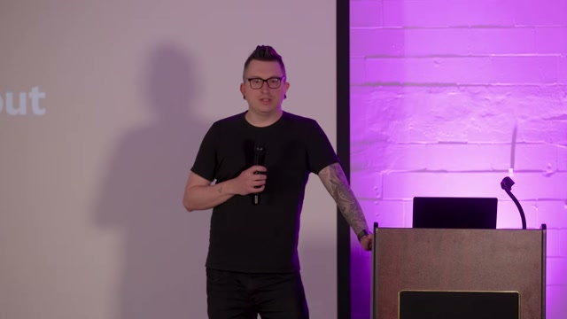
feeling there's a lot of
lot of feelings. For like people that are supposed to be very like rationally scientific-minded
and we like don't talk about feelings, literally everyone has so many feelings right now.
Again, emo existed in 1984 and 1986 a couple blocks away and then in the 90s in the Midwest
and then after that's not really emo. But like the important part is that we're all feeling that.
And I'm feeling that especially, I joke to several people when they asked like, Steve, that title
doesn't make any sense what is going on. And I was like, I think an uncharitable reading of this talk is like,
I turn.
I'm having a midlife crisis and I'm making it all your problems.
You know, but like, you know, you know that this is like changing things.
And I think what's important to sort of like recognize in some ways is that like even if you like
AI and you don't like AI and I think a lot of people perceive me as liking AI and I think that
like in the way that people are very polarized about it, I'm actually very pro AI.
Also there's a lot of problems with it, but like it's like tough.
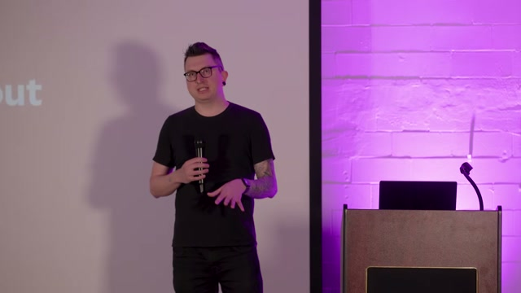
But the important part is that like it's happening and you can't really get away from it.
And I think that's a lot of why people have feeling.
is because like, you know, us in the Ruby community were really, really fucking annoying about TDD for a while there.
But you could like get away from us and go do something else, right?
Whereas like the problem with the AI situation is that it pervades like literally every room and I'm also doing it by continuing to talk about it.
But like, sorry, just like that's what's going to happen.
And so, you know, like just it's very weird.
And so like we've all spent two days here like talking largely many things about like what does it mean for software to be correct.
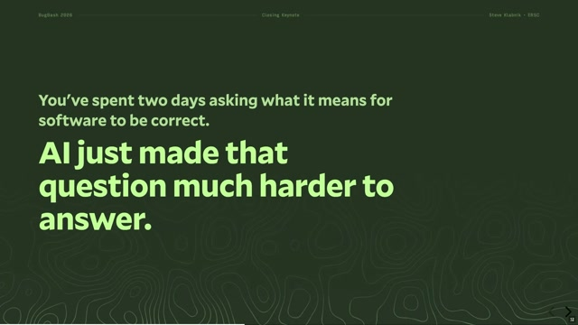
And like AI has kind of like made that question like a very weird and uncomfortable one because, you know, of many reasons that I'm about to actually get into.
And like a thing that's like, I think a core of a lot of this in terms of people's feelings about AI stuff, you know, a lot of people have said and it's been cited on stage the last couple days of like when I review AI written code, it's just like a little weird.
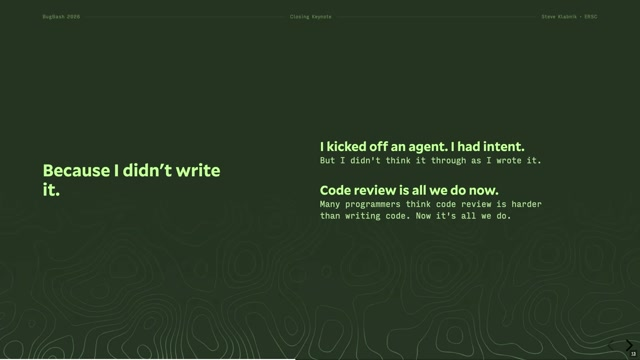
And like it has bugs I'm not used to seeing because when I review humans code, like their bugs make sense to me, but I just get this like eerie sense of distance from AI code and all that stuff.
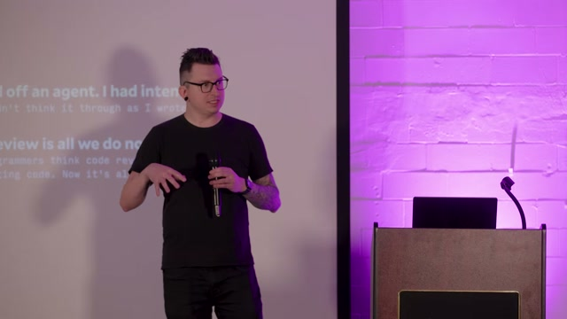
and
And like, I think that part of that is because, you know, when people didn't write stuff, like we now have these weird machines that produce code.
And they are different than us.
And so like you sort of like, even though people use these things as tools, like I often make a comparison between like text editors or compilers to various aspects of AI.
But like I think those analogies have limits.
And I only have 45 minutes and not like five hours.
So I'm not going to get to that as part of an additional like, you know, tangent on a tangent on a tangent.
But like even though, you know, I may open an editor and write code.
and I have some intent. And even though I may tell Claude, like, here's what I want to do and then Claude doesn't does it, like, the intent gets a little weird because while I don't want to claim that LLMs have agency, they can also not do what you tell them to, which is like, but do they though then?
I'm not talking about that philosophical tradition at all. I have like many other things to talk about.
But the point is like right now, it's also like weird because in many cases, code review and like looking things after the fact for those of us who do a lot of AI-based development, it's kind of like all we do now.
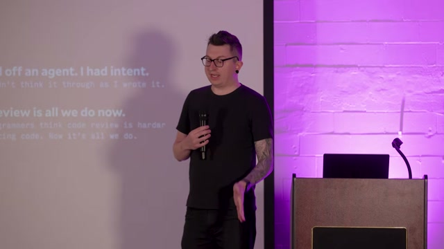
And a lot of people.
a lot of programmers have said, like, well, I really hate reviewing other people's code, and that's not the part of my job that I like.
And I'm sort of like, all my side projects feel like an open source project where I don't write any of the code.
I just review code, but instead of it being written by other people, it's being written my Claude.
And, you know, that's just like a very, it's like simultaneously a totally different way of working and also a very similar one.
Like, I've been lucky to do a lot of open source development in my career.
And so when people are like, man, just like, I don't know what to do when you get code, when you get requests, a lot of them are bad and thereby people you never interacted with before and you have no idea
if they're good or not. And just like, that sucks that that's what we're doing with Claude now, right?
And I'm like, that's kind of been like what my job has been over the last 20 years is like accepting a random PR from any person on the internet who happens to kick one off.
So anyway, I also have lots of feelings, which is sort of this.
So let's talk about the like history of what correctness means, because that's kind of vaguely important, I think.
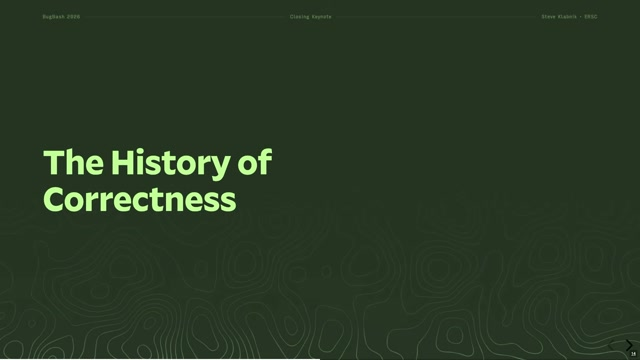
So I want to start with Descartes, actually.
because like
like, there's sort of this like, you know, humans have been asking like, what is truth and what is correctness mean for like a long time, it turns out?
I mean, I'm skipping over a whole bunch of stuff because all my homies hate Plato, but like, we're going to start with Descartes, who like, also I'm not necessarily the biggest fan of, but like, whatever, I think it's a good spot for what I'm trying to say here.
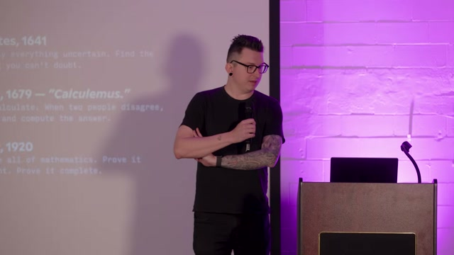
And so, like, you know, Descartes imagined a little demon that would like whisper untrue things to him.
And he's like, how can I trust any of my senses or whatever?
And I'm just like, oh my God, Descartes had access to mythos.
But like that was, you know, that I think therefore I am, is he's like, you need to have a rational, like, it's like foundation of like rationalism, right?
Like, okay, if I can perceive it with my senses and then I know that it's true and real because I perceived it and that's what like sort of matters.
And I had problems, but also, you know, it was the 1600, so, you know, so, you know,
and then like after that I'm going to go to Liebnitz and his calculus, which is basically like, you know, he wanted to formalize all of mathematics into a thing.
and then, like, he was doing, like, the lodge ban of his time, you know, or like the Esperanto.
of his time. Like, if we could just, like, remove all the semantic ambiguity, then everyone would know
what we're talking about, and that seems great, right? So let's, like, try to do that. And again,
it was the 1600s, so, like, you know, we stand on the shoulders of giants and he, you know,
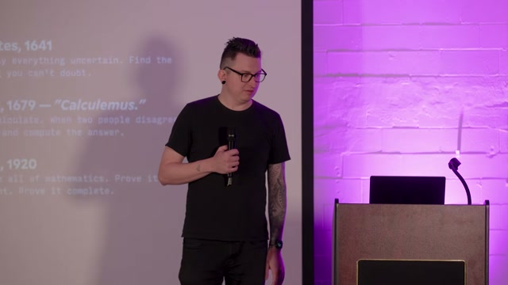
he wanted to do this, and it was a little weird. Hilbert is kind of where a lot of this, like, kind of changes
because, you know, he wanted to, like, also prove all of these different things about the way that we,
like, talked about stuff. And, like, you know, all of this stuff is, like, we are built on top of these
things. And then unfortunately,
I didn't include my slides, but like, you know, a girdle, basically like that whole incompleteness thing was like, kind of like Hilbert, sorry, bro, but you're wrong.
You know, and then also, like, in a very literal sense, Alan Turing also kind of in a different way, you know, being like, okay, well, we have this model of computation and now there's some things that we can't actually compute in a Turing machine and therefore incompleteness is, and there's all these connections between like Hilbert and Gertl and Turing, but I only have enough time to sort of gesture at all of that instead of actually say more things because I have literally not joking, nine other philosophical
or computers and people to talk about. So we're just going to stick right there. But like the point is just like even if I draw these
particular people out, like we've sort of been asking ourselves what is truth and what is real and what is meaning for like a long, a long time now.
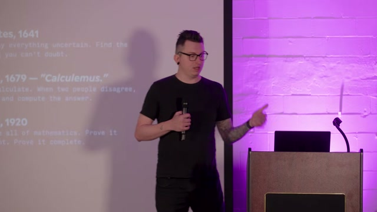
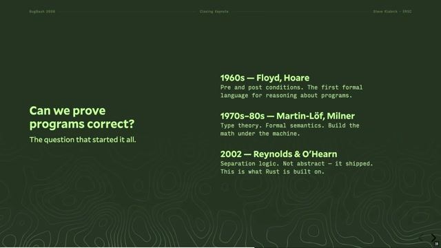
And so in terms of like computer science and how we've been approaching these problems for the last, what is the math here, 80 years, I guess. I don't know. I keep, I'm not sure if it's just the pandemic has ruined my brain or the become up because I'm over 40, but I can't do basic math anymore. So like I'm like, what is 2026,
minus 1960s. Oh God, Steve. Why didn't you memorize that before? It's been a while. The point is, is that like Tony Hoare,
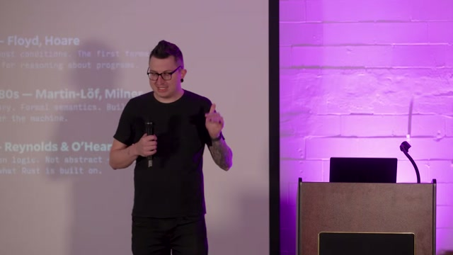
incidentally, Graydon Hoare, the guy who did invent Rust, totally unrelated to Tony Hoare. Just happened to share a last name, both computer scientists. Pretty cool.
! You know, he wanted to try to prove systems correct by having like pre and post conditions. You have the whore triple, right, of like your precondition, your state, and your post condition.
And then you can sort of tower these things on top of each other. And that's how we can like understand how things work.
And that was definitely really, really useful.
And it was sort of like...
trying to formally reason about program behavior. And in many ways, a lot of the stuff that we've talked about the last couple of days owes a tremendous conceptual debt to Tony Hoare and co.
And then, like, later, I'm going to go to Martin Luth, however you, I'm sorry for those of you from Scandinavia or wherever that he's from that I'm mispronouncing, because I know it's not Lough, but I think it's like a luf.
Anyway, whatever.
And like, Robin Milner, you know, really worked on like type theory and formal semantics, but this whole like idea of like, you know,
programs are proofs and
like, our programs are like the instantiation of a proof that proves that the thing's correct and this like correspondence between types and programs and correctness.
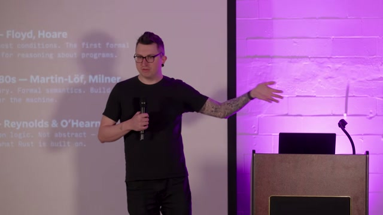
Like that was all happening, you know, before I was born. So that's really cool.
I still have a copy of, you know, a bunch of these books that I need to actually bother reading someday.
We'll see if I get around to them.
Book buying and book reading are two totally separate hobbies, as it turns out.
And then I'm choosing Hearn and Reynolds in 2002 because of separation logic, which was briefly mentioned at least once yesterday.
But
Separation logic kind of takes whore logic and sort of adds the fact of like, wait a minute, like there's real systems under here to some degree and like about like and also still contains the like composable aspects of things.
But this is sort of the like intellectual tradition of what Rust's type system is based on.
The folks who did the work formalizing Russ type system was all sort of based around separation logic.
And so the point is that we've also continued to like refine our ideas of what program correctness is about and what truth means.
And we've created more and more intellectual tooling to sort of make that work.
But like
A funny question is sort of like for many programmers, like, well, my program ran and it did the right thing.
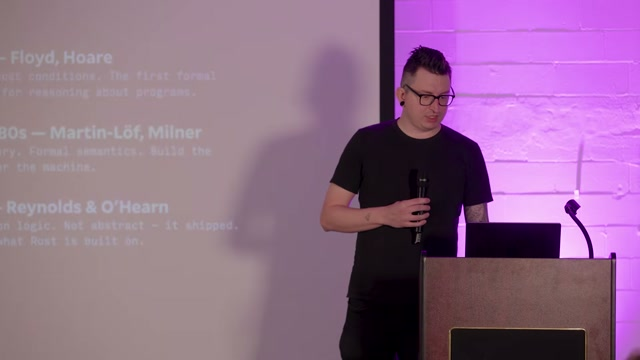
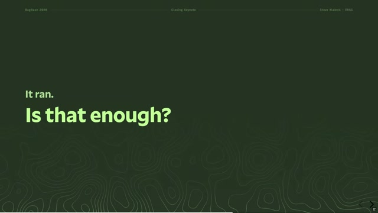
Is that like enough to know that it's correct or not?
Because like a lot of the things that we do also kind of sort of boils down to that.
And the folks, the stuff that you all are like working on is trying to go beyond that.
But for many working programmers who've sort of been ignoring the corners of the sort of things
that y'all like to do, you know, it's been, as it was just said at the end of the last like talk,
like this stuff is becoming more relevant to industry as a polite,
way to say that like many working programmers do not give a fuck about any of this.
And now the problem is that like AI has made it impossible to know what's real and what's not real.
So they're like, wait, how do we know what programs are real?
And you're all like, uh, we've been doing this for like a long fucking time, actually.
And so it really comes out of this question of like, what is truth?
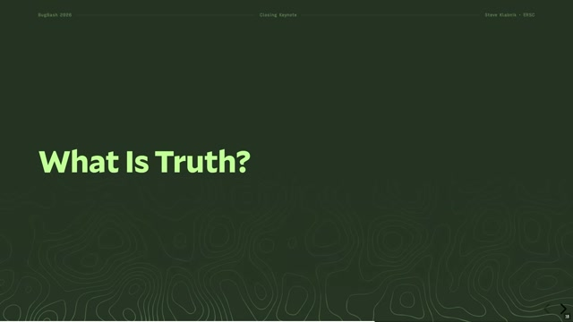
And this is really tough.
We, I'm a weirdo in that I got a computer science bachelor's degree and then I almost got an English graduate degree.
And so I really like to invoke the humanities often because I think,
that that also really matters.
And I wanted the start of this talk to really focus on the human,
because I think that it is true that we think only about computers too often
and not enough about the actual human side of things.
And those things also do matter.
And so there's a lot of people who are on my next slide that you may have a negative reaction to
based on the fact that they're from the humanities.
But like, it turns out that folks in the humanities have also been asking, you know,
what is truth?
I mean, I did do some philosophers like earlier, but the like important part is that like
computer scientists are not, that we don't have a monopoly on the idea.
of what truth is.
I know that sometimes we like think that we do or we pretend to think that we do, but we don't.
And I think there's like a rich intellectual tradition going on that's totally separate from all
the stuff that we study when we go to university, but also is like useful and informative
and doesn't even necessarily say different things.
My point here is not like humanities people are better than computer science people.
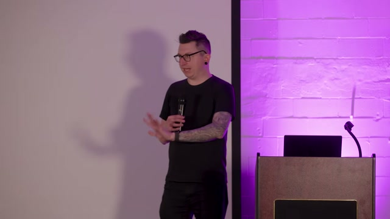
It's more of just like, I wish there was more cross pollination because oftentimes they're saying
and doing things in different senses and in different ways.
And, you know, but like because of the like intellectual lineage of these things, it can be
hard to like make those kind of connections and I smoke a lot of weed.
So the problem, the problem here is like, I'm phrasing this as like meeting leaks and that's because
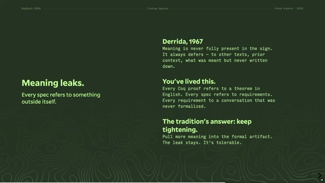
there's this whole thing called post structuralism and structuralism that had beef with like Chomsky and
there's a whole shenanigan set up here, you know, but like I'm going to start off with Derrida in 67.
And so the thing is, is like this whole idea of like structuralism and the post-structuralism
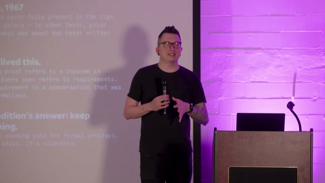
is that you have these like what's called a sign.
And there's the signifier and the signified.
And so like the sort of like the sign is the combination of the signifier and the signified.
And the like signified is the thing you actually mean.
And the signifier is how you refer to what you mean and the sign is the combination of both.
I unironically think this is the best way to understand HTTP and rest.
But that's again, like continues to be separate things.
But like if you all know me from way back when I was obsessed with that, this is like partially why is because like I think it's like Derrida is directly relevant to like why the HTTP is a thing.
But like the point is is that they were trying to construct like where is
meaning and so like does that mean that meaning is this sort of underlying thing that's separate
from language and we how we talk about stuff or is it like something sort of different.
And so Derrida's whole thing is that like meaning is like deferred.
And so you can't ever really fully understand what something means immediately because like you
don't get the full context when you first talk about things.
And so you know like I'm giving a whole talk and you're not really going to probably understand
what I mean even when I'm done hopefully.
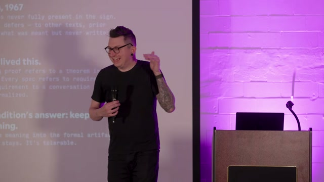
But like the thing is is that like, you know, when we communicate by speaking to each other
And but like you will never really know what's going on in my head, thank God.
Because like you only get my external API into you, right?
Like language is the way that we interface with each other, but like interfaces are slippy and they're like different than what's truly going on internally versus not.
And so this is like a whole bunch of sort of Derrida stuff.
And so again, like this doesn't, this shouldn't be news to you in theory.
Maybe some of the ways it's presented and the ways it's talked about is a little different.
But like everybody knows that like just because you've proven something in Rock doesn't mean that it actually works in the
real world, right?
Like, was it newth that said, like, I've proved this program correct, but I haven't run it yet.
So like, you know, who knows, right?
Like, we acknowledge that there's a world outside of our fancy little type systems sometimes
that like makes things not work even when they're supposed to.
And so, you know, this is like a thing that we've been grappling with, but just in a totally
separate way.
And so sort of what we've been doing in the computer science world is to try to make type systems
and other formalisms increasingly expansive in power so that we can try to eliminate that gap
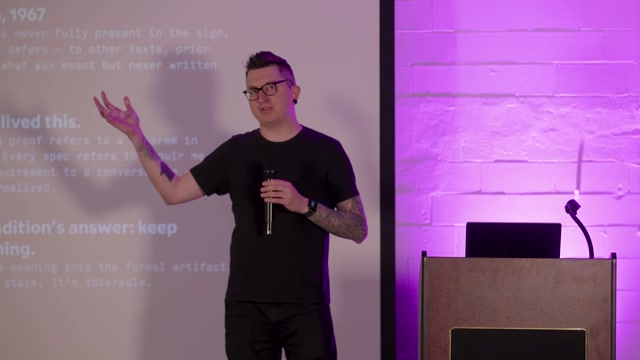
as much as possible.
But I think an important thing to sort of recognize.
is that it is fundamentally impossible to ever eliminate that gap.
And so we're going to have problems for like ever because it turns out that like meaning is hard
and like not, I don't think it's really actually solvable.
So then I want to go to Deleuze and Guateri in the 80s.
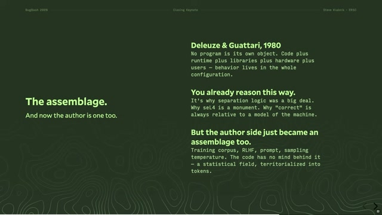
And basically like their whole thing, or again, for the purpose of this talk, their whole thing,
they had many things, is like the assemblage.
And so this is sort of this idea, the same thing of these like reference and things referencing each other,
but acknowledging that like it's not just within the system of the regime of signs or like
whatever, that like matters, it's also everything else.
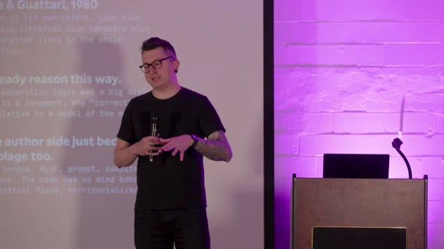
And so like, you know, in terms of like this conference,
we are all individual members of this conference and we are making it up and
we are bringing all our experiences and having the discussions.
And like reality is like much more complicated than just, you know,
I prove my program is correct.
And in the same way that like our programs run on real hardware and like hardware has,
you know, bit flips, for example, right?
So if you prove your program correct and then you put it into a spaceship and then
you fly it out there and then radiation hits it and it flips a bit,
like those are things we have to deal with because the real world is not the ideal
machine, it's like a physical object that obeys the physical world laws of reality.
And, you know, not that we even know what those things entirely are, because physics is also hard and kind of a little insane, but like whatever, again, I'm trying to like really stay on topic here, even though it's hard.
And so like this is like, this is why separation logic mattered a lot.
And it's why like SEL4, for example, is like a big achievement is because they did more than just like prove that a C compiler could do the thing correctly.
It was also like, you know, that this operating system is more proven correct in terms of like the hardware as well.
And there's correspondence between the compiler's output and the assembly and the assembly and the
way that that works and like blah blah blah but you still do get bugs occasionally.
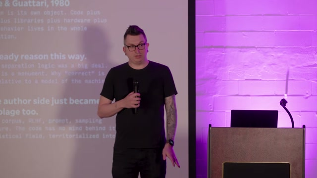
They don't think SEL 4 has actually had a real correctness bug ever I think question mark
I was reading that the other day but like a lot of times you prove something and you find out your
proof was wrong with the real world and that like kind of matters and it's because the scope
often includes more than just the thing that you're actually doing and so what's weird about like
this in this sort of model and why I think this matters and what with LLMs is that like we
used to think that somewhere in in all this artifice of our compilers and our IDEs and our I
everything else that there was still like a human somewhere involved in there right like a
human had to kick off the actual act of writing software at some point and that's
just like not really true anymore now we also have a machine that produces
software of let's say varying degrees of quality to give every you know a little
and so like that's also like strange because now we're sort of like interacting with
machines that feel human even though they're definitely not human probably I
mean maybe we're machines I don't know so a whole separate thing I had no time to put
ghost in the shell in this talk which is like shocking given how much I
love ghosts in the shell but like the point is is that this
this is also like one of the things that's weird is now like machines have taken on a certain amount of animus that like didn't really exist in the same way before you know we had this stuff and so finally I want to invoke Baudriard because you know he man I wish Baudreard was still alive because I really want to see what his take on this all this was because Baudreard basically was like
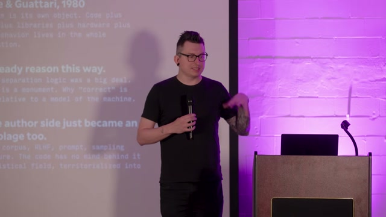
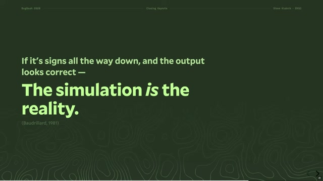
okay meaning is completely and totally dislodged from whatever it was supposed to refer to in the first place or at least I would say like that's the way people often describe it I would say that like he would say that he would say that
that for many people like corporations in the state deliberately obscure truth in order to make you not be able to
understand what reality was and he did this by being like an old guy and watching TV in the 90s you know like this is like well before like the matrix is like directly building on top of like this stuff not like you know and now so now we're like oh my god like part of me when I'm not being at my most charitable is when people are like but with LLMs now I don't know what like reality is and I'm like you couldn't know what reality was before that actually like that was just never true
you just got to ignore it for a while and now it's being shoved in our faces that it's true and so we're having a little collective mental breakdown and I feel like very you know
Errogantly oh you had your mental breakdown now I had my mental breakdown 20 years ago when I was reading some books
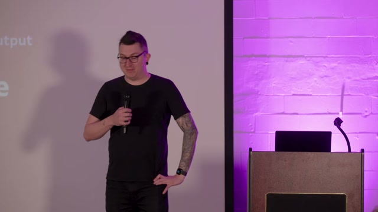
You know it's just like not actually better obviously but like the point is is that like this shit is intense and it's scary and it's weird and it's okay that we all have feelings about this because it's like not it's like not great to realize that you can't like trust anything anymore. You know like it's not like even if it was like tech
technically a lie in that way that I'm dressed in all black and I'm like did you know the corporations are lying to you like it is like not it's not like great you know what I mean like it's like it's like it's true that that's like that sucks like I do want you know things to be like real and so this is like the thing like a lot of times programmers previously would say that their program is good enough because they wrote it and they understood it which then you're like well why bugs exist if you understand it and they're like shut up Steve and then they tried it out by executing it and like AI and LLMs have basically broken all three of these parts of
of what we did to sort of like informally make correctness happen or like the things that you know we like try to agree that we know why programs are working is because like now we didn't write the code we don't need to understand the code itself and like sometimes you don't even try it like there's people that are like doing
integration testing by basically making user personas with Claude and then having Claude click on the website and give like a thumbs up or a thumbs down and then you know you basically do like user review testing of your site and I don't know how they can afford to do that but apparently people are doing it but like the point is just that like
everything is all broken and we don't know what is even real anymore.
So what where does that like leave us though?
at the same time like I can be up here and be like reality isn't real but like okay cool Steve but like what does that what does that actually like do?
like I do have to go back to work on Monday you know what I mean like it's not like you can't just be like well
sorry like I don't know what's going on anymore and so I'm gonna do that classic cool philosopher thing and be like fucking I don't know man
but what I do think matters and is important though is that like
you all and many people that are adjacent to you have been taking these questions about like what does a program do seriously it's it's so funny to like actually just say that like most programmers don't care if their programs work but like that is like true basically and has historically like been you know because again it's not really just about like in the limit do things work correctly like you know proving like a hundred percent of your program works 100% of the time is way harder than like being like well the test pass and like we'll have jobs to do and like most of the time you know users expect software to be buggy and you know users expect software to be buggy and you know users expect software to be buggy and you know
and kind of bad and we've trained everybody to like think that computers are crappy and like you know whatever else and so like the reality is that
most people have not really cared that much about correctness and now they've been emboldened by tooling that makes you even need to care way less about correctness
and then they're going like oh my god I don't know how my programs work anymore and so what I mean to say is that like I think that all the stuff that we've
been talking about here and like all the stuff that you all been working on and things that you will do in the future is like very critical for the rest of the industry and I'm glad that the rest of the industry is starting to pay attention to
some of this kind of thing because I think that it's unfortunate that we had to like worry about you know are we going to put
everyone out of jobs in the next five years or whatever everybody's talking about now to in order to like care about whether our programs work but I guess that's the reality that we live in and so you know like all of these tools and techniques like I don't the point of my talk is not that reality is not real and therefore don't bother doing testing it's like just acknowledge the fact that like when you prove a program correct you still have not necessarily run it and there's gaps in those things and we need to work on that because
because the goal is to get better and better.
The goal is never to be perfect.
You're not going to be perfect.
I don't because I don't really believe that you can fully understand reality,
the idea we could prove a program correct also doesn't make any sense.
But that doesn't mean we should totally give up on, you know, become solipsist and like completely not care about anything.
Like I do care about truth, even though I'm not sure that what that is exactly.
I do think it's important to be as truthful as possible and to sort of like approach that limit.
And so, you know, uh, in some ways I think that you all have been like more prepared for this historical moment than many of the other.
parts of the industry and I think that's important and does matter. And so please continue your work even if I'm not sure that it's going to like actually make sure that our programs work correctly at the end. And so that's kind of what I want to like leave you with sort of what I said before. Like it's very strange that I started programming at seven and now I'm 40 and 2026 is probably the first year I will not write any software myself because Claude has been writing most of my software for the end of 2025 and I review every diff before I merge it on my real adult real projects. So my personal projects I don't care, but I never cared in the first
place, but like there is a professionalism aspect, but like it is important to me that it is significant that like,
! I mean, I think back to like when I used to argue about tabs versus spaces and I'm just like, I am like questioning about,
like, do I read the code or not at this point? It's like very different kind of thing.
but like you do need to read the code, especially today because LMs are not perfect, blah, blah, blah,
whatever. Like I do think we have professional responsibilities and you should not just merge random crap into
into master. Like it is important that you make sure like for our users.
we need to make sure that our software is as correct as possible. That does actually matter.
And it is important and we do have like a professional duty to not put total crap out there in the world.
Like I do think that that is important.
But it's just very strange that like I find myself wondering, like, I've devoted my life to this thing and it feels like it almost doesn't really matter anymore in many ways.
And that's a little strange.
And so, you know, as I'm like an engineer over the hill, but like not, you know, terminally there, I'm like wondering, like, am I going to be my grandfather?
And like just me, you know, I got to type in the code and then I retired and then all the kids don't anymore or like whatever.
And like, do I just barely make it out of the ship before it crash?
or like, you know, I do like working with Claude, but for those people that really hate using AI tools for development,
I really feel bad for them because like that's what happened to my dad.
Like he had to do a job he didn't like and I do again if I'm being uncharitable like we have been sort of babies who have been paid very very well to get to do what we think is fun for a job
And now that we're like told like sorry you can't just do whatever you want for fun you have to like actually do your job
We complain about it a lot and that like and that's because like we've been babyed for like a long time and so like on
some level I'm just like, oh yeah, you have to go to a job that you hate like sucks like to be like literally every other profession that's not ours.
That's just rained hundreds of thousands of dollars for like, you know, just not working very often.
I'm dating a real estate agent now and like when she's like looks at like, wait, you guys do, when I told her like, oh yeah, me and like two other friends of mine were taking Friday off because the video games coming out, we were going to play it.
And she's like, hold on. Like, wait, you're doing what?
And I was like, yeah, that's really normal actually. Like it's totally fine and I'm 40 and I'm taking a day off work to play a video game, okay?
And she's like, I don't know.
You guys are...
The more I learned about software developers, the weirder I find you all.
But it's like, it's good perspective from the outside.
You know what I mean?
Like, I think that when we complain about the things, like,
it is true that like labor stuff matters.
When my best friends is in town, he's one of the few unionized jobs in tech.
Like, it does matter what our working conditions are.
But at the same time, we do have to recognize that we whine about like no longer having ping pong tables at the office
to somebody that works like a real blue collar job.
They're like, okay, man, like I don't care about you.
And that, like, sucks because we should all, anyway.
I'm not trying to even more tangents because like I'm already basically, you know,
at time. So the point is, is that, like, you know, I'm going to be my grandpa and, like, get out of here
right before everything collapses and be like, okay, cool. You know, and I'm going to be my dad,
where maybe it turns out that I don't like working this way, but I'm going to have to do that because,
like, I got bills to pay, you know, and a family to feed. And they're in like, that, that's still,
like, that's still good to, you know, like to, you don't have to love what you do for work.
You couldn't just, like, care about your family and feed them. And that's like,
that's a good life. You know what I mean? Or, like, am I going to be Pittsburgh and just
completely reinvent myself and do, you know,
either something else or change with the times and, you know, do the stuff that I, you know,
like now and just be like, it's okay that I thought 15 years ago it was really, really important to
describe, like, you know, well, should you name your methods in an imperative tense or, like, not,
you know, and like, we'd argue about that forever. And like, you know, so like maybe that stuff didn't
matter, and maybe I wasted a little bit of my life, but, like, maybe that was okay. And,
like, times are different and that's fine. And so we shouldn't have so much anxiety about it. And so
I would like to encourage you all to also, like, you know, think about, like, what one are you going to be,
and what do you want to do in the world?
And please try to make the world a better place,
even though, again, like, in my moments, I'll be like,
I don't know what truth is, but that's, we still gotta do our best, you know?
And so, you know, how are we all going to collectively deal with the fact
that this year is probably one of the most transformative years
for our industry for better or for worse?
Like, it might also be a bad way, too, or a good way.
I don't know, but I think we're all having a lot of anxiety
and we gotta like take a collective breath together
and like acknowledge that it's like fine to have that kind of anxiety
because when the world changes so rapidly,
Like we are like always the ones being like, we're changing the world.
Like I was watching, God, I'm on my final slide, I'm already going on more tangents.
It's fine, this will be a second.
I was watching Silicon Valley on the airplane, okay?
And Silicon Valley is like an awesome time capsule that was like hard to watch in the moment
because it was like so real.
But like also, you know, they're all getting up there on stage and, you know, at TechCrunch Disrupt.
And they're like, and that's how I'm making the world a better place.
And I was like, oh my God, it's like a sleeper cell activation phrase in my brain of like
startup culture for 15 years ago, you know?
But it's like, but, but.
But like that was a thing that we said we were doing while we were like massively automating other industries out of their own employment and like cheering about it and making money.
And so now that it's happening to us all of a sudden we're really worried about automation, right?
But like, so on one hand, like I feel that we're being a bit hypocritical, but also like we all do have like families and mortgages and stuff, or many of us do.
And so it's it's not unreasonable to be upset when that happens.
So anyway, regardless, just, yeah, that's what I have for you today.
Thank you so much for having me.
Sorry to be a little bit of a downer.
Steve, do you want to take some questions?
If we have time, I don't know, since we were like, we're a little late, like, I don't want to take up some position.
Sure, I'm happy to answer questions.
Hopefully it was something more than I don't know.
Yeah.
But thanks so much.
It was an excellent talk.
Thank you.
Economists have been defining technology as labor multibreliber,
malt.
multiplier or amplifier.
Yeah, yeah.
Some people are saying that AI is different.
It's actually a capital amplifier.
Sure.
Where do you?
Where do you?
Okay, so like the problem is like, the way I would answer your question is that like,
am I an Orthodox Marxist or not?
Is really what it boils down to?
Because like, historically speaking, like that is the question is like,
okay, automation is historically been like a thing that amplifies labor's ability to do work, right?
But the end of the day, you still need somebody to be doing labor down there.
And so.
So like, I don't know if, like, me kicking off a swarm of Claude is, like, still, like,
rooted in the idea that I'm the one who's doing the little bit of labor, and it's just a massive
multiplier because, like, again, like, okay, so that, like, makes sense in some capacity, like, okay,
I'm still a working programmer because I'm still doing my job.
It's just that my job is telling a bunch of LMs to do their job.
But then, like, well, what about the cron job that kicks off and tells Claude, like, please, you know,
look at my code base and send in some refactoring PRs for me?
And then it's like, okay, well, somebody had to write the cron job.
And then I'm like, well, you know, like, somebody told the
LLM to write that Kron job. So I don't know where it comes down, but I do think that, like,
okay, a thing that I find comfort in is the fact that, like, if you look at Anthropic and Open
AIs jobs pages, they are still hiring engineers, right? And so they're like, if I expect anyone
to be able to fully be putting software developers out of, like, work in the sense of not having
us do our jobs anymore, it would be those companies. And given the fact that they're not doing that,
I'm feeling pretty good at the end of the day. Now, I'm also me with 20 years or how many years has been a
industry experience. Like my little brother's been trying to find a job in this industry for like three years.
Even though I get invited to keynote conferences and get up on the stage, I have not been able to figure out how to get him a job.
And that really sucks. And so I don't want to like dismiss, you know, again, it's sort of like, I'm, I'm on this lifeboat.
So what are you complaining about in the water, you know, treading? So like that's like part of it too. But I do think that like,
at least for the near term future, and maybe near term means like 12 months and not like 10 years or something.
But like that ultimately our profession is not going away. It's just going to be changing a lot.
And I do worry about like automation is like automation creates a gap where there's value there that's like able to be captured that wasn't before.
and the question is does like our jobs get that value capture or do we get that value capture?
And so like I have also experienced like LLM psychosis in the sense of like I have a side project and I was hanging out with the family over Christmas and I shipped 100 PRs to my compiler on Christmas Day while hanging out with my family.
and like that's slightly disordered behavior maybe.
But it's like, you know, you get a.
excited about like kicking off, you know, these things.
And like, so it's like work, but it's not work.
And then you find yourself working all the time, but then you like don't necessarily want to work all the time.
And then again, like GitHub's kind of going down and I'm trying to sell sorts control.
So I sort of need to do work all the time because I need to get that shit out there.
You know, it's like there's pressures that come from more than just AI.
And I think that we're just all feeling all of that simultaneously.
So I'm not sure where it leads.
But I think in the near term, I think it is a productivity multiplier.
And the question is what do we do with that more than it's going to be a thing that replaces us?
I don't think that we're at the point where it just actually literally replaces humans.
investments.
Thank you.
And who's your favorite bit character?
So I'm really squeamish, so I tried to watch it and I couldn't.
Even though like I was like, but I think that the main doctor
is actually my favorite character because they don't let him get away with like,
he doesn't get to be a redeemable asshole, he's just kind of an asshole, right?
And I think that's like a big shift for this kind of like television.
So that's what I have to say, but I haven't watched as much of it as I would because I just can't handle blood.
So you know, that's how goes.
!
Hey, Steve, how you doing?
Good.
Rusty question.
Yes.
So I saw this deal.
export where like AIs are writing better Rust than writing anything else.
So cool.
It makes me think though, is Rust good enough for AIs or do you see the language evolving further
for AI stuff?
So I do think that Rust is great for LMs.
I'm happy with the output of Claude with Rust code in general.
But like I do think that we're never going to be finished with programming languages.
And so like I expect that someday there will be a language that I like better than Rust
that exists.
but I'm not exactly sure.
sure what that looks like in particular.
And so, you know, but for now I definitely like Rust and TypeScript is my default stack because
just like, you know, I think types are good and they help you sort of want to give LLM's immediate
feedback on whether the thing is right or wrong and types are great for that.
And so I think that like I've seen some stuff that's like, well, Ruby code has like less token usage.
And like, okay, but like also it has Eldra Torr's lying beneath there that are like hard to debug.
And so like, you know, I do think that like statically typed systems are going to become more
and more prevalent with LLMs and talking about being historically contingent.
Like I think it's got, it's real weird that we got Rust at the right moment at the right time
and it happens to have a lot of the factors that LMs find to be good at programming.
And that was definitely an accident unless Nico is a time traveler, which I don't think he is.
So, uh, but yeah, so I do think that we're not at the end of programming language history,
but I definitely don't have a sense of what I think is like going to come next is the way I would put it.
Hey. Hey, Steve, great talk.
One complaint. You didn't talk fast enough. I'm sorry.
Okay. I'm just kidding.
It's a common problem of mine.
I love Steve. I'm his coworker. I kind of feel bad stealing this. But yeah, I just wanted to rib you a little bit.
Okay, so you might understand kind of what I'm getting at here back to your like little philosophical
bent because I didn't get a pre-recorded version of this talk. I didn't get to see it early.
I've always thought that like part of the thing, especially in modern society, computers are very alienating.
You know, like whenever you use social media and you see people, you know, like being like animals attacking each other and stuff like that, you know, being behind the screen away
from the person on the other side is very alienating.
And I think for me, one thing about AI is that it, the alienation has come to us, you know,
people who like love just sitting in front of the computer, right?
So like, and I think that's a big part that's very difficult to articulate is like why you feel
alienated from your own work.
I know you know what I'm getting at here, but I guess my question is, what do you do to manage it?
I think just for me, personally, I think it's literally touching grass.
Like, do you do anything when you're thinking about these things?
I think this is a great framing and I, I agree.
not just because we're friends and we work together, but like, yeah, like, on some level, I think that maybe I'm, like, the right kind of neurospicy and that I don't get as alienated by these things as other people do necessarily, but I do try to, like, take breaks. I've been trying to, like, lift weights and that's gone okay.
And, like, I think that, like, getting out is definitely helpful.
While, like, while in earlier stages of working with these tools, I definitely worked a lot and all the time, I do, like, you know, when I'm with my girl,
kid over the weekend, I try to not use Claude while hanging out with them anymore because I think it's important to pay attention to the literal children that are now in my life.
But, you know, like, but I do think that kind of matters, but I think on some level it's just, it comes back to, again, the, like, every job is alienating to some degree.
And like, you know, even when you got to write code that was interesting, you know, fixing your 12th Gera ticket of the week was like always vaguely alienating in the first place.
And so I think it's an amplification more than a change in kind. Like, it's more of a change in degree than a change in kind.
but, you know,
Yeah, it's basically just like, I've sort of put a moratorium on side projects at the moment and just play video games.
Shout out Marathon.
Marathon and JJ.
I can't believe I want 45 minutes of talking about Marathon or JJ.
I guess technically I did at the start.
But like because of that, right?
Like I don't want, I have joked to my girlfriend that if I didn't have her, I would probably just be sitting in front of nine Claude panels 24-7 and not ever doing anything else.
And so it's really important, I think, to like, touch grass.
Right.
In whatever capacity, touching grass is a metaphor for a reason.
and whatever your grasp.
is, you know, maybe that's playing an instrument or like talking other humans or going outside or like whatever it is.
Like it is important to do those things. Yeah.
Sweet. Thanks everybody.